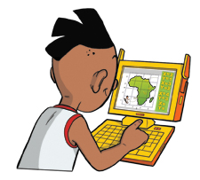

Kusasa will challenge learners to complete a series of projects in each grade from grade 4 to 6.
The intended outcome of each project will be the mastery of specific thinking skills: analytical, problem-solving and idea-generating skills. Examples include: partitioning a problem into sub-problems; identifying assumptions; and visualising a problem.
Learners will employ some of these skills when they begin planning their projects. They will try out other skills as they complete some of the preparatory activities required for their projects, and as they make progress through the modelling component of the project. And they will develop yet other skills as they complete reflections on their project experiences.
The incidental outcome of each project will be the acquisition of a range of mathematical and scientific thinking skills and concepts, which learners will practise regardless of the actual content of their projects.
However, the focus of each project will be an object, or organism or process or system that appeals to learners' interests and/or that they are studying in other learning areas.
Learners will graduate from a Kusasa project with new thinking skills, new mathematical and science skills, and new content knowledge that they have absorbed through experiential play and modelling.